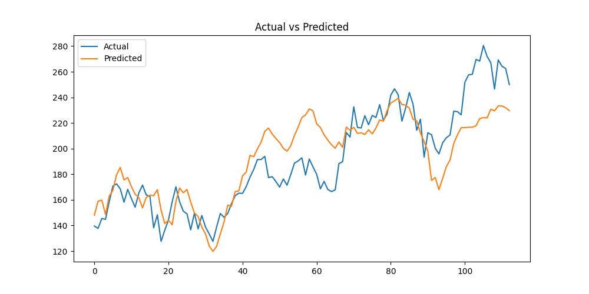

Using STFT + CNN
This project converts financial time series data into spectrograms using Short-Time Fourier Transform (STFT) and applies a CNN model to predict future values.
Signal → STFT → Spectrogram → CNN → Prediction

The model captures overall trends but smooths high-frequency noise.
Python, TensorFlow, NumPy, SciPy, OpenCV
Nayana Shaji